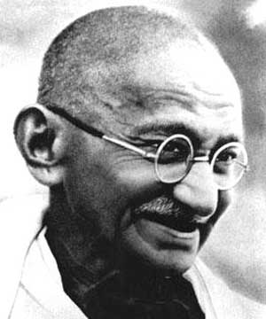

Mohandas Karamchand Gandhi (1869-1948)

2 Ekim 1869'da Hindistanýn Porbandar kentinde doðan Mohandas "Mahatma" Gandhi, baðýmsýz bir Hint devleti kurma yolunda þiddet dýþýlýk, barýþ ve birlik adýna mücadele veren bir dava adamýdýr.Gandhi ilkokula yedi yaþýnda Rajkot'ta baþladý ve daha bu yýllarda, hayatý boyunca tipik bir özelliði olacak bir davranýþ biçimini de sergilemeye baþladý. Ürkek bir çocuktu; öyle ki, okula, kimseyle konuþmak zorunda kalmamak için koþarak gidip geliyordu. Ama bu kendi halindeki çocuðun, ürkekliðinden beklenmeyecek bir atýlganlýðý da vardý. Arkadaþlarýný ürkütüyor olabilirdi ama, yanýnda kimse olmaksýzýn çevreyi incelemekten, hayvanlarla dostluk kurmaktan büyük bir zevk alýyordu. Ona gözkulak olmakla görevli ablasý, bu yýllarýný anlatýrken, Gandhi'yi "civa gibi" bir çocuk olarak nitelendiriyor. (Modern Liderler Ansiklopedisi, s. 681)
1887'de lise bitirme sýnavlarýný veren Gandhi, kardeþleri arasýnda eðitimine devam eden tek çocuk olduðundan, bir aile dostu Ýngiltere'ye giderek orada hukuk öðrenimi görmesini önerdi. Gandhi, Mod Bania kastýndan kovulmakla tehdit edilmesine raðmen, orada "þaraba, kadýna ve ete" el sürmeyeceðine dair yemin ettirilerek Ýngiltere'ye gönderildi. Sonunda kasttan da kovulacaktý. (Modern Liderler Ansiklopedisi, s. 682)
Ýngiltere'de hukuk eðitimi gördüðü yýllarda kendisini tam bir Ýngiliz centilmeni olarak yetiþtirmeye çalýþtý. Kendine þýk kýyafetler alarak, dans ve Fransýzca öðrenmeye koyuldu. Batý müziðine kulaðýný alýþtýrmak için, keman dersleri aldý. Ayrýca bir taraftan da hitabet derslerine devam ediyordu. Asýl amacýnýn Ýngiltere'de kalmak deðil de, Hindistan'a dönmek olduðunu hatýrlayýnca bütün bunlardan vazgeçti. (Modern Liderler Ansiklopedisi, s. 682)
Daha sonra, Güney Afrika'da avukat olarak çalýþmaya baþladý. Güney Afrika'da geçirdiði yirmi yýl, birçok bakýmdan Gandhi için siyasi eðitim yýllarý oldu. Daha Güney Afrika'ya varýr varmaz eþitsizlik ve ýrkçýlýkla tanýþtý. 1. sýnýf kompartýmanda seyahat etmekte olduðu için trenden atýldý. (Modern Liderler Ansiklopedisi, s. 682) Hint iþçileri ýrk ayrýmcýlýðýna karþý korumak için uðraþtý. Ancak bütün bunlara raðmen, Gandhi bu dönem boyunca bir Ýngiliz uyruðu gibi davrandý, taleplerini dile getirirken asla Ýngiliz egemenliðini sorgulamadý. Aksine Güney Afrika'daki Hintlilerin durumlarýný ancak Ýngilizler'in yardýmýyla düzeltebileceklerine inanýyordu. (Modern Liderler Ansiklopedisi, s. 682)
Hindistan'a döndüðünde 46 yaþýndaydý. Ýlk defa Güney Afrika'da uyguladýðý satyagraha (þiddet dýþý direniþ) ve ahimsa (þiddet dýþýlýk) ilkelerini Hindistan'da da yaygýnlaþtýrmaya çalýþtý. Hedefi þiddet dýþý sivil itaatsizlik yöntemleriyle Hindistan'ýn sömürücü Ýngiliz idaresinden kurtulup, baðýmsýzlýðýna kavuþmasýydý. 30 yýlý aþkýn bir süre satyagraha eylemlerine liderlik etti. Hapise atýlmasýna ve þiddete maruz kalmasýna raðmen davasýndan vazgeçmedi. 1930'da binlerce insanýn katýldýðý 24 gün süren 'tuz yürüyüþü"nde Ýngilizlerin tuz tekelini protesto etti.
1945 yýlýnda Hindistan baðýmsýzlýðýna kavuþtuktan sonra Müslümanlar ve Hindular arasýnda meydana gelen þiddet olaylarý karþýsýnda ülke ikiye bölündü. Þiddete ve bölünmeye karþý oruç tutarak mücadelesini sürdürdü. 1948 yýlýnda Yeni Delhi'de fanatik bir Hindu tarafýndan vurularak öldürüldü.
Gandhi'nin en büyük ilkesi ahimsa (þiddet dýþýlýk)'dýr. "Ahimsa, yaþamdaki tek gerçek güçtür." (Savaþta ve Barýþta, C. I, s. 114) demektedir. Ahimsa'nýn eyleme dönüþme þekline verdiði isim ise satyagraha (hakikate tutunma, þiddet dýþý yöntemlerle direniþ)'dir. Gandhi satyagrahanýn iç dünyada elde edilmiþ bütünlüðün bir meyvesi olduðunu bilir. (Merton, 2001, s. 20) "Sözlerini ve eylemlerini paylaþtýðý, insan iliþkilerinin oluþumuna düþünce ve eylemleriyle katýldýðý yer kamusal ve siyasal alandýr. Kamusal ve siyasal alan sorunlarýn özgür insanlara yakýþýr biçimde bir karara baðlandýðý yerdir; yani ikna ve sözlerle, þiddetle deðil. Þiddet temelde sözsüzdür. Düþüncenin ve mantýklý iletiþimin kesintiye uðradýðý yerde baþlar. Bu nedenle þiddet eylemlerine hazýr hale gelen bir toplum, sistematik bir mantýksýzlýk ve ifadesizlik içindedir. (Merton, Kaknüs Yay., 2001, s. 22 )
Gandhi'nin yaþamý ve iþinin en önemli gerçeklerinden biri Batý kanalýyla Doðu'yu keþfetmesidir. Batý'nýn kendi içinde iyi taraflarýnýn olduðunu ve bu iyi taraflarýn sadece Batý'ya özgü deðil, ayný zamanda Doðu'ya da ait olduðunu farketmiþtir. (Merton, 2001, s. 17)
Gandhi Hint halkýnýn kendi içinde uyanýp, canlanacaðýný anlamýþtýr. (Merton, 2001, s. 19) Gandhi'ye göre kolonicilik kurumlarý, Hindistan'ý kalkýndýrýp özgürleþtirmeyi amaçlamaz. "Hükümet okullarý bizi hadým etti, çaresiz ve Tanrý'sýz býraktý. Bizi memnuniyetsizlikle doldurup, memnuniyetsizliðimize çare sunmayarak ümitsiz kýldý. Bizi olmak istediði insanlar yaptý: Memur ve tercümanlar." (The Gandhi Reader, 1961, s. 219)
Gandhi, pasif bir durum takýnýp haklardan ya da haysiyetten vazgeçilmesini savunmamýþtýr. Tersine, þiddet dýþýlýðýn haklarýn savunulmasýnda en asil ve etkin yöntem olduðuna inanmýþtýr. (Merton, 2001, s. 57) "Þiddet dýþýlýk korkaklýðý örten bir kýlýf deðil, cesurlarýn en yüce erdemidir. Korkaklýk þiddet dýþýlýkla kesinlikle baðdaþmaz. Þiddet dýþýlýk kiþide savaþma yeteneði olduðunu varsayar." (Savaþta ve Barýþta, s. 58) "Þiddet dýþý direniþte öldürmek deðil, ölmek cesaret iþidir. (Savaþta ve Barýþta, c:1, s. 265)
Gandhi, Tanrý'ya inanmadan böyle bir programýn anlamsýz ve imkansýz olduðunu düþünür. (Merton, 2001, s. 65) Þiddet dýþý direniþ tekniðinin baþarýsý, diktatörlerin insafýna kalmýþ deðildir. Çünkü þiddet dýþý bir direniþçi aþamadýðý güçlüklere göðüs germede Tanrý'nýn yardýmýna güvenir. (Savaþta ve Barýþta, C. I, s. 175) "Satyagrahanýn temeli duadýr, Satyagrahi (þiddet dýþý direniþçi) kaba kuvvetin zorbalýðýndan korunmak için Tanrý'ya güvenir." (Savaþta ve Barýþta, C. II, s. 62)
"Yýllar geçtikçe Tanrý'nýn sesi daha çok duyulur olmuþtur. En karanlýk saatimde bile beni terk etmedi. Sýk sýk beni kendimden kurtardý ve bana baðýmsýz bir iz bile býrakmadý. O'na olan teslimiyetim arttýkça mutluluðum da artar." (Hindu Dharma, s. 93)
"Kendinden kaynaklanan bir varlýða sahip olan, herþeyi bilen, dünyada bilinen bütün güçlerin kaynaðý olan, hiçbir þeye baðlý olmayan, diðer bütün güçler yok olsa da ya da tükense de var olmaya devam edecak olan bir Tanrý inancýnýn olmadýðý yerde, hakikat ve þiddet dýþýlýðýn gerçekleþmesi mümkün deðildir. Bu her þeyi kucaklayan hayat dolu Nur'a olan inancým olmadan hayatýma bir anlam veremezdim." (Savaþta ve Barýþta, C. II, s. 112)
Gandhi gerçek bir demokratý, 'bütünüyle þiddet dýþý yöntemlerle kendi özgürlüðünü, dolayýsýyla da ülkesinin ve bütün insanlarýn özgürlüðünü savunan' (Savaþta ve Barýþta, C. II, s. 204) þeklinde tanýmlar. Gandhiye göre "Dünyadaki hiçbir hükümet kalplarinda özgürlüðü yakalamýþ insanlarý istemedikleri halde selam durmaya zorlayamaz." (Savaþta ve Barýþta, C. II, s. 38)
Sonunda Mahatma, kendi þiddet dýþýlýk kampanyasýnýn Hindistan'da baþarýsýzlýða uðradýðýna tanýk oldu. Ancak Gandhi dünyadaki barýþý ve düzeni garanti altýna alabilecek gerçek bir þiddet dýþýlýða olan inancýný son anýna kadar sürdürdü. (Merton, 2001, s. 87) "Ben kendi hatamý kabul ettim; mücadelemizin þiddet dýþýlýða dayandýðýný sanmýþtým, gerçekte zayýflarýn silahý olan pasif direniþten baþka bir þey deðilmiþ. Böyle bir hareket, fýrsatýný bulur bulmaz doðal olarak silahlý direniþe geçer." (Savaþta ve Barýþta, C. II, s. 276) "Her gün pasif direniþi þiddet dýþý direniþ olarak görmemize neden olan o bilinçdýþý hatanýn aðýr bedelini ödüyoruz." (Savaþta ve Barýþta, C. 2, s. 325)
Risâle-i Nur'da Gandhi ismi Tarihçe-i Hayat'ta iki kez geçmektedir. Cevat Rifat Atilhan, mektubunda Bediüzzaman'ýn gerçek yerinin anlaþýlmadýðýný söyleyerek Nursi'yi anlamayanlar için bir mukayese yapar: "Üstad-ý Azamla (haþa, mason üstadý deðil) muasýr olan büyük adam ve Hindistan'ýn kurtuluþ rehberi Mahatma Gandhi. Biri Ýngiliz ceberutuna, Ýngiliz emperyalizmine ve onun korkunç istila ve istismarýna baþkaldýrmýþ ve yýllarca büyük davasýna hizmet ederek Ýngiltere'nin bütün haþmet ve kudretini, azim iradesi önünde âciz ve mefluç bir hale getirmiþtir. Bizim bu tipte yetiþtirdiðimiz büyük insanýn mücadele ve mesai hayatý ve þekli, birincisine çok benzemekle beraber, fazla olarak ona Cenâb-ý Hakk'ýn bahþ buyurduðu Müslümanlýk ve iman nuru da kendi ziyasýný güneþ gibi Ýslam iklimlerine ve diyardan diyara aþýp götürmüþtür. Arada sadece büyük ve þayan-ý esef bir fark vardýr. Bu fark; birincisine dört yüz milyona yakýn bir insan topluluðunun gösterdiði sarsýlmaz inanç, hürmet ve baðlýlýk... Bizimkine karþý da -mahdut bile olsa- bazý asalet fukarasý soysuzlarýn açýða vuran istihfaf ve sinsi hücumlarý."
Atilhan mektubunu þöyle bitirir: "Ya Rabbi! Neden bizi böyle her kýymet ve fazileti paçavraya döndürecek kadar pespayeleþtirdin? Biliyoruz, sana karþý günahýmýz çok büyüktür. Yeter ya Ýlahi, yeter bu sûkut bize!" (Tarihçe-i Hayat, 551)
"Kimse Tanrý'yý yargýlayabilecek kapasiteye sahip deðildir. Bizler o uçsuz bucaksýz rahmet denizinde damlalarýz. Ben Ýlahi Ýradeye bütünüyle boyun eðmeliyim" (Savaþta ve Barýþta, C. II, s. 321) diyen Gandhi, dünyadaki birçok insaný da derinden etkilemiþtir.
Nelson Mandela, Gandhi hakkýnda "Gandhi kolonilerdeki devrimcilerin ilk örneðidir. Þiddet dýþýlýk stratejisi, ancak bize hükmetmek isteyenlerle iþbirliði yaparsak hükmedilebileceðimiz iddiasý ve þiddet dýþý direniþ, 20. yüzyýlda kolonicilik ve ýrkçýlýk karþýtý uluslararasý hareketlere ilham kaynaðý olmuþtur." der. (Merton, 2001, s. 105)
Etiyopya imparatoru Hile Selassie (1891-1975) "Mahatma Gandhi adý, doðruluk ve özgürlükle eþanlamlý olmuþtur; bu amçlar adýna zulüm gören milyonlarca insana ilham kaynaðý olmuþ, özgürlük meþalesini yakmýþtýr." (Merton, 2001, s. 121)
Dönemin Ýngiltere Baþbakanlarýndan Winston Churcill Gandhiyi 'yarýçýplak bir Hint fakiri' þeklinde tanýmlamýþ "Bu adam, imparatorluða meydan okuyan bir sivil itaatsizlik hareketini teþkilatlandýrýp uygulamaya koymuþtur" demiþtir. (Churchill 1930) Gandhi, birçok açýdan Churcill'den daha büyük bir demokrattýr. Churcill Gandhi'den nefret ederdi, Gandhi ise kimseden nefret etmezdi. (Merton, 2001, s. 119)
Hayatý mücadele ile geçen Mahatma Gandhi dünyaya þu mesajý vermiþtir: Her zaman zalimler ve caniler olmuþtur, bir süre için yenilmez görülebilirler ama sonunda hep yenilirler...